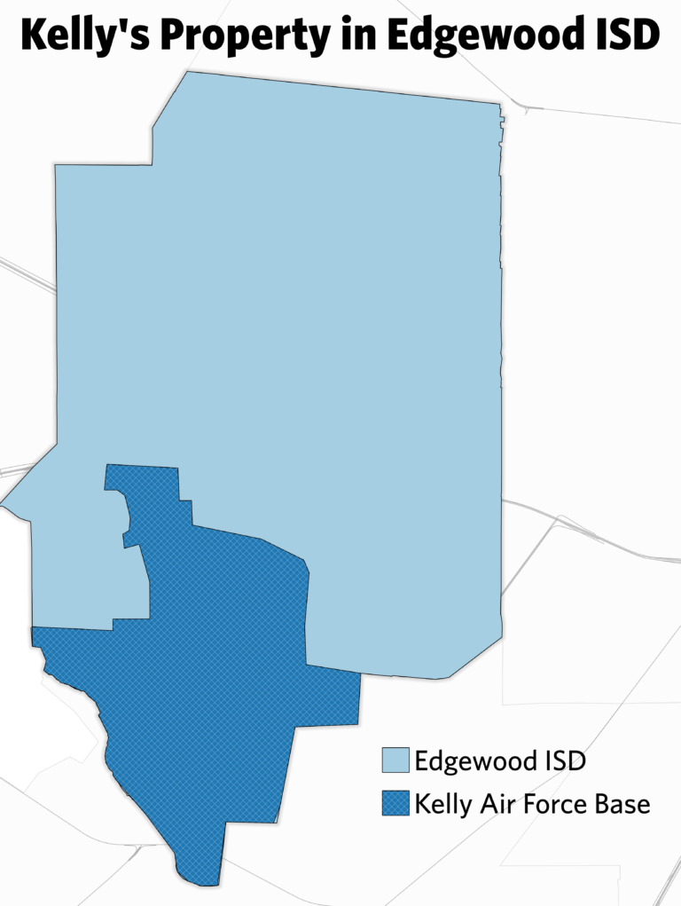

Note: This story was originally published by Folo Media.
This is the third installment in a series of essays on the legacy of a court battle that began in San Antonio, ended in the Supreme Court, and determined that American children have no constitutional right to an education. Read the first and second essays.
By 1960, residential and public housing segregation had effectively consolidated San Antonio’s Hispanic residents on the West Side, where more than half lived in 18 of the city’s 92 census tracts. In nine of those tracts, nearly half of the housing was categorized by the federal government as “deteriorating” or “dilapidated,” the latter of which was deemed hazardous to occupants’ health and safety.
With unemployment rates nearly double the city’s, and with almost half of its residents without stable employment, West Side median incomes ranged from 29 to 60 percent of white incomes. Many industries limited the type of jobs black and Hispanic workers could do. As a result, nearly half the population on the West Side lived below the federal poverty line, which left a quarter of residents chronically hungry.
Interviews from a 1968 United States Commission on Civil Rights investigation reveal widespread discrimination against Hispanic people in San Antonio. Parents and students expressed frustration as they saw another generation of bright and capable children denied the opportunity to thrive. One student at Lanier High School described college as “an impossible dream.”
Lanier High School in San Antonio ISD would struggle with internal inequality within its district, but neighboring Edgewood ISD had been thoroughly isolated.
Edgewood became the poster child for what writer Jonathan Kozol would call “Savage Inequalities” in his 1991 book of the same name. It was not only the poorest district in Texas at the time, but the poorest district in America’s 16 largest cities.
What is most troubling is that 70 years prior, some in Texas had predicted exactly this.
The district nobody wanted
In a 1921 report, the Texas Department of Education noticed that some of the state’s 7,000-plus school districts were too small and too poor to function alone. Without being absorbed by larger districts through consolidation, these districts would be unsustainable.
In response, State Superintendent of Public Instruction (a position replaced by the Education Commissioner in 1949) Annie Blanton recommended a statewide analysis of each district complete with strategic proposals for consolidation to ensure districts would have enough money.
Blanton noted, however, that merging districts was easier said than done.
“The principal obstacles to school consolidation are to be found in local prejudices, local jealousies, and in real estate considerations,” Blanton wrote. The primary reason Blanton gave for doubting the possibility of consolidation was that “certain wealthy property owners oppose these plans.” They did not want to see higher taxes, nor did they want to see others benefit from higher property values afforded by a strong school district. In short: They wanted to keep their “advantage.”
The best chance for consolidation came in 1947, when the State Legislature passed a massive overhaul of public education with the Gilmer-Aikin Act. Among its reforms was minimum funding measures designed to equalize resources and a call for consolidation of the state’s 4,500 districts.
The state had made consolidation recommendations to each county in the 1930s, but Gilmer-Aikin’s passing left the decision of consolidating up to local school districts who negotiated directly with one another.
“They were looking so carefully at property values,” says Dr. Christine Drennon, director of Trinity University’s Urban Studies program. “These negotiations, when they made it to paper, were financial. They were about: How much property do you bring to this agreement? What’s your debt? How many kids you got? And is this a good financial agreement?”
It was a deal Edgewood could never close. The tiny, poor district wanted consolidation, but other districts were leery. Ranked near the bottom of Texas property values and per-pupil spending by a public report in 1972, newspapers also reported the district had debts totalling $500,000. If a district inherited Edgewood, it also meant inheriting its history of challenges.
Those challenges included housing that had degraded into slum conditions, tuberculosis outbreaks, segregation, lacking infrastructure, few businesses, and thousands of children living in tax-exempt public housing. In a previous essay, Folo Media explored how those conditions came to be, and how the residents were trapped in Edgewood by exclusionary 20th century housing practices.
“Nobody wanted Edgewood,” said Chandra Villanueva, a senior policy analyst at the Center for Public Policy Priorities in Austin. “They became [an independent] district because nobody else would take them.”
Some districts reached merger agreements — to become Northside, San Antonio and Northeast — and a few chose to remain exclusive, like Alamo Heights and Harlandale. Edgewood was left to fend for itself.
To Villanueva, the story that played out in Edgewood looks predictable. “When you develop a school finance system that’s based on local property values at the exact same time that you’re explicitly segregating neighborhoods on race, then you can’t act surprised 50 years later — 70 years later — when things are unequal.
“[It] was very intentional the way that we set up school districts and funding at a time when it was OK to be explicitly racist. And we are experiencing the fallout from that system.”

The Kelly Paradox
Technically, Edgewood in the 1960s had substantial property wealth. Kelly Air Force Base — the city’s largest employer and military installation at that time — was right around the corner from where most Edgewood families lived.
A 1969 analysis of the local economy showed that federal spending in the greater San Antonio area was just under $1.2 billion and was responsible for more than 34,000 jobs in the city.
Yet, despite thousands of jobs and stable sources of federal cash flowing through the Edgewood area, analysts and researchers sent to study San Antonio repeatedly cited Kelly AFB as a problem for a community that had more misery than it could bear.
For starters, Kelly AFB, while providing jobs for families, did not yield property taxes for the district. (Nor did the public housing that served 13 percent of Edgewood students.)
Another problem was employment inequity on the base itself. By December 1968, 126 formal complaints had been registered at Kelly and six studies were published analyzing patterns of racial discrimination documented between 1917-1966.
Of the six reports, each concluded significant imbalances in higher-wage jobs among ethnic groups on base. While minorities accounted for over half the employees on base, whites maintained 85.4 percent of the 1,254 supervisor jobs and 90 percent of high-wage non-supervisor personnel despite having no quantifiable educational or supervisory advantage. An internal report of Kelly’s Equal Employment Opportunity subcommittee called these figures: “inequities of staggering magnitude.”
Edgewood’s isolation emerged as the consequence of a cycle of segregation and exclusion. What could be summarized as an issue of “wealth,” clean data and hard numbers, was rooted in something far more human and racially motivated. In the next essay, Folo Media will take a deeper look at the findings of the U.S. Civil Rights Commission’s investigation into discrimination against Mexican-Americans in San Antonio and the American Southwest.
Acknowledgments
This article was produced during my time at Folo Media during 2017. Folo Media was a nonprofit newsroom focused on the challenges of inequity and neighborhood segregation in San Antonio, Texas. The newsroom ran from the spring of 2017 through early 2018, and during that span published more than 100 stories covering a range of issues, such as: housing, education, racial segregation, non-profit solutions, and much more.
If you are interested in following the work of those who helped lead Folo Media’s work, I encourage you to keep up with the American Journalism Project, the H.E.Butt Foundation’s Echoes Magazine, and the San Antonio Heron.